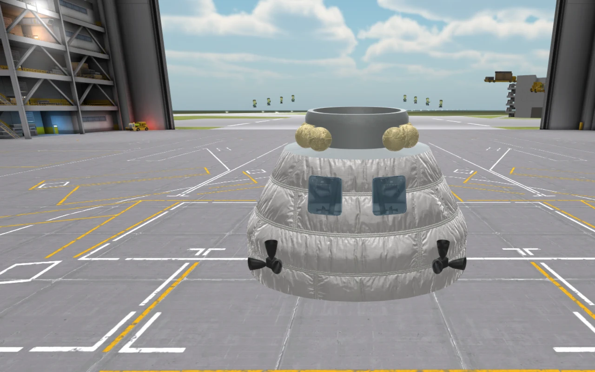
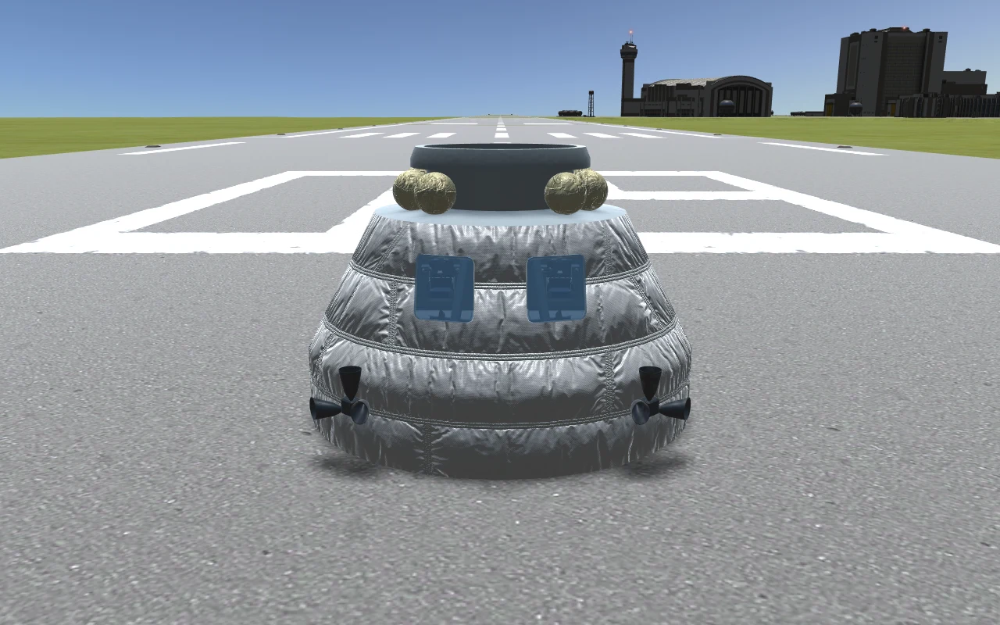
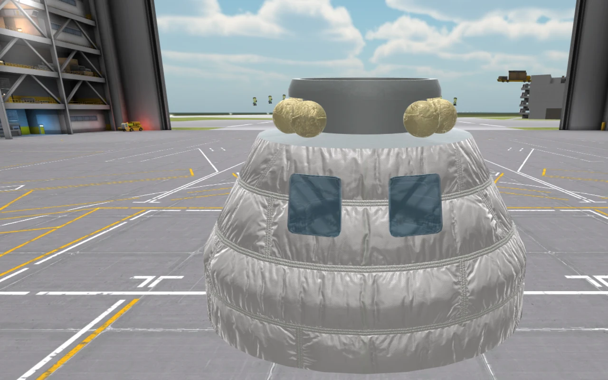
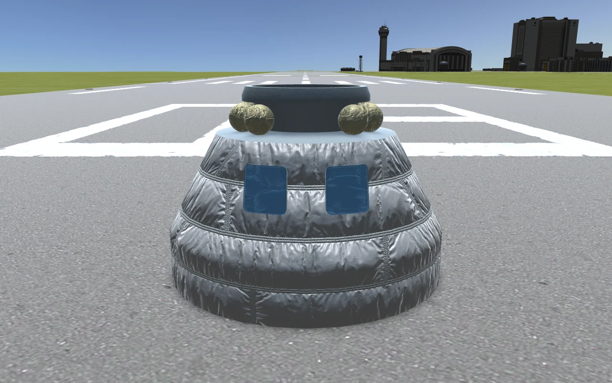
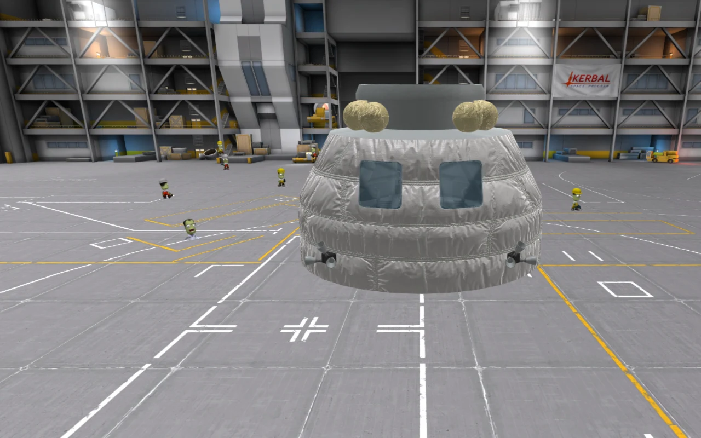
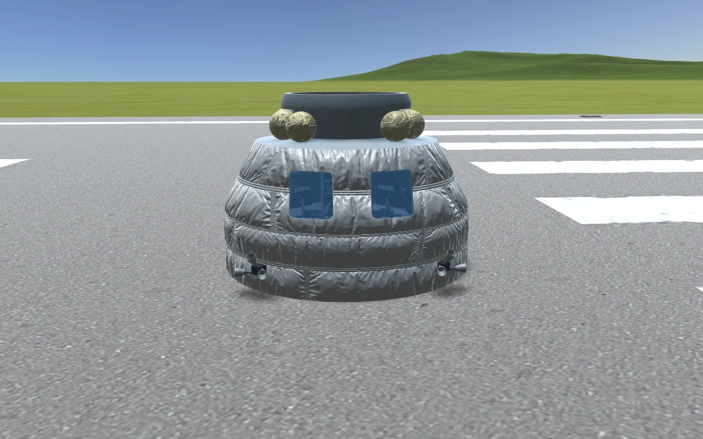

ShineFix
Catalog
Gallery
Evidence
← Back to supported mods
Crew Vessels
Optics verified
Human tested
Version 0.3
Compatibility evidence
Original screenshot gallery
Parts
Lynx Neo Spacecraft


Lynx Neo Spacecraft Lander Only


Lynx S Neo Spacecraft

